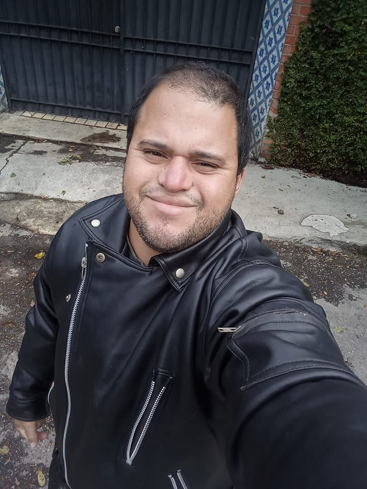

Sistema de Gestão de Biblioteca
Desenvolvido na linguagem C. O sistema aborda estruturas de dados, manipulação de arquivos, ordenação de informações e controle de empréstimos, garantindo eficiência na gestão do acervo.

"Transformando problemas complexos em soluções ágeis e inovadoras."
Sou um estudante de tecnologia focado em Engenharia de Software, programação e empreendedorismo. Busco sempre aplicar metodologias ágeis e boas práticas de design para desenvolver sistemas eficientes. Tenho forte interesse em entender desde o levantamento de requisitos até a implementação do código final.
Desenvolvido na linguagem C. O sistema aborda estruturas de dados, manipulação de arquivos, ordenação de informações e controle de empréstimos, garantindo eficiência na gestão do acervo.
Projeto focado em engenharia de requisitos e modelagem UML para um sistema de varejo online. Inclui diagramas de casos de uso e classes, estruturado sob o framework Scrum.